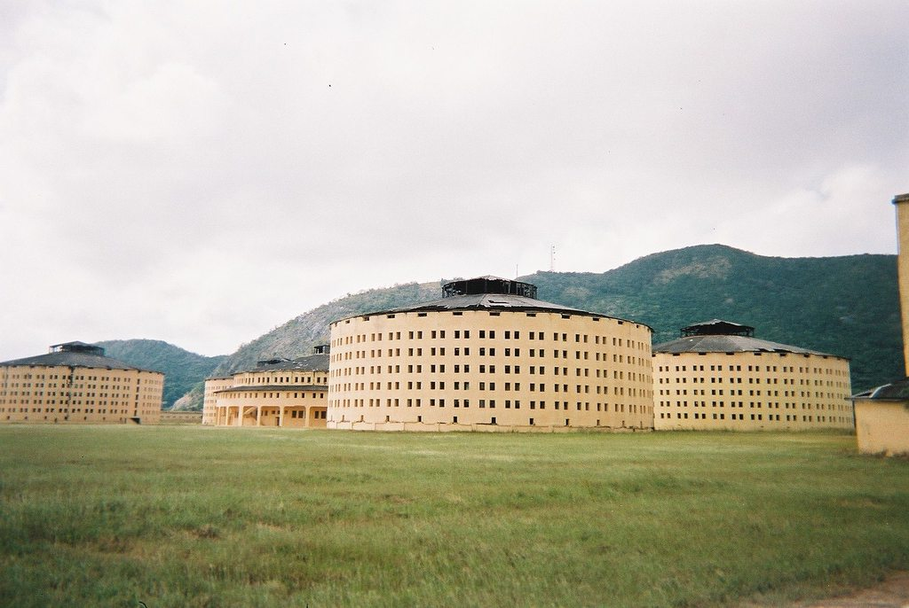

自从离开学校之后，我的耐心越来越少了，没有了大把的自由而无用的时间，我很久都没有看过一本人文书籍、完整地看完一部电影，甚至是我曾经省吃俭用买来的游戏也不曾打开来仔细品味。近来在友人的推荐之下，耗费了一个周末，阅读了这本米歇尔·福柯的《惩罚与规训》. 作为一本近代著名哲学家所著的书籍，要为其写一篇严肃的读后感可能要达到一篇本科毕业论文的工作量，此外已经有很多人做过类似的事情，我就不再重复了，我想结合自己生活中的所见所闻谈谈书中的一些内容。
1974 年时的福柯
从车裂到注射死刑：酷刑为什么消失？
在这本书的开篇就细致地描述了一个残忍的酷刑场面：
行刺国王的达米安“被送到格列夫广场，那里将搭起行刑台，用烧红的铁钳撕开他的胸膛和四肢上的肉，用硫磺烧焦他持着试君凶器的右手，再将熔化的铅汁、沸滚的松香、蜡和硫磺浇入撕裂的伤口，然后四马分肢，最后焚尸扬灰”。
在如今，再也没有了在人声鼎沸的菜市口砍下一个鲜活的头颅的场面，资本主义国家认为这是人性的胜利，基督教徒认为是神的博爱也惠及犯罪的人，社会主义国家认为这是社会主义制度以人为本的优越性。这些观点都是唯心的片面的，福柯在他的书里面仔细剖析了这其中的原因。
上述酷刑有两个比较关键的特点，第一个是惩罚过程是公开的，而第二个则是惩罚的目标是肉体，而在现代的刑罚当中这两点都消失了。
关于“公开”的消失，作者提到了一个非常滑稽、令我实在是绷不住而又深有体会的原因：君主选择公开执行残酷的刑罚，为的是向人们彰显自己的权力。但是罪犯在明知道自己即将死亡的时候，往往会肆无忌惮的咒骂君王，而有很多人来围观这一场残忍的行动，就是为了在这个时刻发出响亮的喝彩，来表达对君王的不满。这个时候，这个被公开处决的死刑犯，成为了那些心怀不满的人民的“嘴替”。所以当权者企图让人民更自己一起谴责挑战权力的犯罪行为是危险的，相比而言让他们忘记是一种更安全的选择。
这一点在我们的社会上是可以真真切切的感受到的，例如近年发生的欧金中灭门案件，因为在村子里长期受到基层官员亲友团体的欺压，欧选择了杀掉邻居一家。案件发生以后互联网上面的声音是值得玩味的，人们称呼犯下杀人罪的欧为勇士。当地政府发动大量的人员漫山遍野的寻找他的踪迹，互联网上所有人都在祈祷他还活着，想听他站出来向公众诉说他的冤屈。最终欧的尸体被找到时，网友们一致表示当地政府官员都松了一口气。其实我作为一个旁观者我也不知道欧到底是一个好人还是一个坏人，但是在当前的语境之下他是什么人完全不重要，我从当中看到的是大多数人认为欧杀死横行霸道的基层官员亲戚，是侠义之举，大多数人都在借着欧的行为，或者是他们想象出来的欧的行为，来表达自己对于基层管理者的不满。由此可见，让人们聚在一起公开讨论犯罪行为是一件多么危险的事情。后续发生的唐山打人事件，同样在互联网上掀起了巨大的讨论热潮，人们谈论的其实并不是唐山，而是那些小城市看不见的角落里黑暗的事情。这一次的不同之处是罪犯没有死亡，后续进行了审理判决等司法的流程，但是比较异常的是热度如此之高的一件事情，发出来的媒体报道确实非常少的。媒体对于如此受到大众关注的事情，自然是应该投入更多的精力去报导的，如果没有特殊的力量去干预而呈现出这样的现象，那显然是不合理的。其实他们很聪明，他们知道让你们忘记比让你们讨论更安全，正如 1984 里面那句经典的名言“无知即力量”，这里的无知不是没文化，他对应的英文单词是 ignorance，翻译成“忽视即力量”也许是更贴切的。
而关于“肉体”的消失，是因为随着社会生产关系的变革，社会需要自由的肉体，所以国家这个暴力机器它的统治对象也逐渐的从肉体变成了精神，惩罚的对象自然也从肉体之间的转换成了精神。关于这一点书中的原文给出了非常精辟的表述：
愚蠢的暴君用铁链束缚他的奴隶，而真正的政治家则用奴隶自己的思想锁链更有力地约束他们。最坚固的帝国的不可动摇的基础就建立在大脑的软纤维组织上。
统治你的思想最有效的方式就是规训，规训是本书最核心的专业名词，他通过各种各样巧妙的手段，让你自认为自己的思想是自由的，但你早已进入他的圈套之中，被他们成功规训和统治。
了解了这一点之后，你就更加理解为什么你一会需要学习这个精神，一会就需要学习那个精神，明明你根本就没有在学，明明你就只知道那个精神的名字，明明你的会议感悟都是从网上抄的，你交上去也不会有人看，但他们依然要你这样做，因为他们深知统治精神的重要，但是又苦于科技所限没能发明出精神注射器，才不得已而为之。抖音、今日头条这些“奶头乐”的信息流的出现，让人类离发明精神注射器这样一个伟大的东西又近了一步，有学者认为群体是无意识的，但是有了这样的精神注射器之后，只需要在你的信息流当中按比例的添加一些左倾的信息，你就会变成一个左人；我给你加点向右的信息，你就会变成一个右人；你以为你的想法很重要，但你不过是推荐算法的奴隶而已。这警醒了我们在获取信息的过程当中“主动”的重要性。
全景敞视主义：我们大多数人都生活在监狱里
既然惩罚的方式从野蛮的屠杀变成了文明的监狱，那么如何设计一座监狱建筑则是一个需要讨论的话题。监狱绝对不是随意建造成任何形式都可以的，不然你可以闭上眼睛想象一下在监狱里面盖上老北京的四合院、日本的一户建和美国的前后草坪小别墅，那画面多少有一些抽象。建立监狱的目的是为了规训犯人，那什么样的建筑能够更好的完成规训呢？在书中提到了一种英国哲学家杰里米·边沁设计的完美监狱，在四周修建一个圆形的建筑关押犯人，而监狱的中心是一座高塔。这个看起来丑陋而失败的建筑，其设计核心在于监视，坐在高塔里的人可以监视每一个犯人，而犯人不知道自己是否正在被监视，但他确切的知道高塔上的人可以监视自己，这样一种被监视的阴影促使他规范自己的行为，也就是被规训。这一建筑的设计理念是：
纪律的实施必须有一种借助监视而实行强制的机制。在这种机制中，监视的技术能够诱发出权力的效应，反之，强制手段能使对象历历在目。
权力应该是可见的但又是无法确知的

在古巴青年岛特区新赫罗纳的圆形监狱
仔细审视我们自己的生活，我们的学校、我们工作的写字楼，虽然外观上和书里提到的那种造型奇特的监狱不一样，但它的功能上却是相似的。老师站在高出地面几十厘米的讲台上，为的就是能够监视到每一个人；在赛里斯的国企和政府单位当中，职位高标志就是拥有独立办公室，这些企业和单位都知道被监视是一种痛苦，而职位的升高可以让你拥有豁免这种监视的福利；在使用互联网的时候，并没有规定什么词语是不能使用的，但一旦你使用了那一个词语，你就会被封号禁言处罚，这就像你不知道那个中心高塔里的人是否正在看你一样，如果你知道他什么时候在看着你，那你只需要在他看着你的时候规范自己的行为就足够了，而当你不知道他什么时候在看着你，你笼罩在被监视的阴影之下一刻也不敢放松。
我还想举出一个特别的例子，就是网络摄像头在赛里斯学校的妙用。我记得在我上物联网课程的时候，网络摄像头被认为是物联网诞生的标志性发明之一。但是现在有很多的教师认为建筑形式产生的外在的、物理层面的、潜移默化的监视依然不足够，于是他们在教室的内部安装了联网的监控摄像头，他们显然没有精力去 24 小时盯着监控摄像头监视学生的一举一动，但是这个网络摄像头就相当于全景敞视的监狱里面的高塔，学生们知道监控摄像头的存在，也知道监控摄像头一定可以监视自己，但他们不知道自己是否被监视，他们在被监视的阴影之下压抑自己的本性。这样的一个小小的监控摄像头，的确让教育工作变得更简单，但这样的教育是压抑的，等到他们长大走进社会，拥有一块不被监控的空间的时候，他们会是什么样子的呢？
瘟疫中的规训方案：此时此刻的显学
根据 17 世纪末颁布的一道命令，当一个城市出现瘟疫时，应采取下列措施：首先，实行严格的空间隔离：封闭城市及其郊区，严禁离开城市、违者处死，捕杀一切乱窜的动物；
瘟疫引出了种种规训方案。它不是要求将大批的人群一分为二，而是要求进行复杂的划分、个人化的分配、深入地组织监视与控制、实现权力的强化与网络化。
书中所描述的 17 世纪应对瘟疫的方案，仿佛就是今天的日记或者社会新闻，虽然在这期间经历了两次工业革命以及信息化的浪潮，但是人类社会治理人的方法还是没有本质的改变。也许所有的政治家都会有一个建立乌托邦社会的梦想，但是实现起来却是阻力巨大的，而瘟疫这样一个令人恐惧的东西，恰恰让这样强有力的控制变得正当，是一味绝佳的药引子。如果单纯读到这部分内容可能会令人绝望，也许我们当下的困境永远也走不出去，但是好消息是福柯描述这些瘟疫时期的控制方式不过是为了指出它的落后，它就是抛砖引玉里面的砖头而已，象征着野蛮和粗鄙，当然不排除有人读书读一半一知半解就开始当说明书实行。这种由瘟疫带来的严格的控制，只是在特定的时间空间下进行的一种尝试，注定是要被取代的。听到他会被取代你又开始充满希望？那令人遗憾的消息就到来了，严格的控制会消失，但是在这一场关于规训的社会实验当中积攒下来的经验，探索出来的新发明，都会永远伴随着我们，他会像高塔、监控摄像头、像空气一样的融入我们的生活当中，它会让你心甘情愿的接受，它会让你认为你是自由自主地选择了这些。
你好，美丽的新世界！
Refs:
- 《规训与惩罚：监狱的诞生》，米歇尔·福柯
- https://zh.m.wikipedia.org/wiki/欧金中案
- https://zh.m.wikipedia.org/zh-hans/圆形监狱